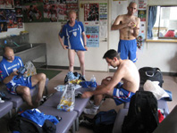
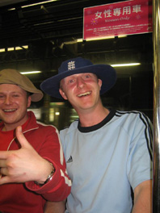
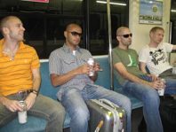

|
Hachioji Park, Saturday 26th May,
Newly crowned TML champions BFC finished their season with a 4-0 victory over Kanto Celts, skipper Jon Day scoring twice as we finished six points ahead of second-placed Swiss Kickers.
It was 0-0 at halftime too -- a common theme in BFC-Celts games. That all changed with two goals inside a minute at the start of the second half through Jon and young Alex Sahara.
Frames staff missed both goals as they went in search of refreshments. At least that's what Masa said. Emi was looking mighty cute in those sandals and hotpants, and that enormous hat!
Less said about the first half the better. Dr. Ivo, third most famous thing to come out of Norway after A-ha and John Arne Riise, smashing a volley against the crossbar and Alastair Himmer bringing a sharp save with a back-post header.
Pink Neil raised in interesting chicken-versus-egg point on the train ride home -- after an eggless visit to the beer and egg shop -- and it was thus:
'Al, you're always the top scorer in the warm-up!' Aah, comedy gold from the Little Fella! BFC's number 40 raised the Pradas to point out that BFC only actually cross the ball during the warm-up. A real teaser.
So instead of outside, BFC went down the middle at the start of the second half, Day sprinting clear to flick the ball over the advancing goalkeeper with his LEFT foot and DO NOT ADJUST YOUR SETS!!!
Brian 'Engine' Doyle quipped that it was a 'left shinpad,' ensuring certain demotion from the first team. As Cap'n Jack says in 'Pirates 3': 'Shoot him and cut out his tongue! Then shoot his tongue!'
Moments later Alex was streaking through the middle, in a manner of speaking, and flicked the ball calmly past the Celts keeper. 2-0 and effectively game over.
BFC's third was a thing of beauty. Paul 'The Lodger' Wadsworth threading a superb ball through to Day for a carbon copy of Alex's goal. I had a semi on. Magic!
There was still time for the club's top scorer Shosuke Yamagishi to score his 12th of the season as BFC finished off their season in some style, although Celts showed more than enough to suggest they will comfortably avoid relegation.
Dermott, who covered every blade of astro, was withdrawn at the end looking shattered -- poor bugger. He deserved better than to be on the end of a 4-0 defeat.
Afters were messy, involving beer without eggs (unbelievable concept, I know!), Ivo taking pix of anything that moved to remember his brief stay by and The Engine refusing point blank to snort a line of wasabi for a 10,000 yen bet. Boring!!!
Stevie G's 'airlock' comment will go down in legend, although cannot be repeated in print (at least while Reuters sponsor us), and ensure he becomes known in future match reports as 'AIRLOCK' rather than 'Stevie.'
I remember Daikanyama and Nakameguro and crawling out of a taxi in brilliant sunshine and something, or nuffink. And we won the league by six points. Hurrah!!!
Report by Knackered Converse
|